Egg Nebula: Combining Art, Technology and Open Data for Creative Science Communication
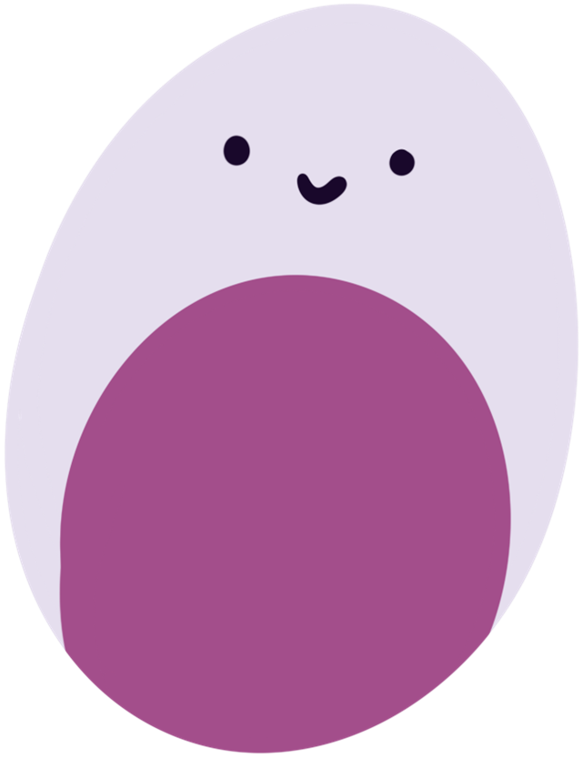
Introduction
Astronomy is often communicated through jargon, formal talks and papers. That leaves out many people who are curious but never get a way in.
Egg Nebula began in 2019 as a quiet place to look up. When everyday pressure felt heavy, the sky made it feel a little smaller. The project sets out to hand that feeling to someone else.
It explains the night sky the way a friend would: in plain words, with drawings and stories, from where we stand in the Philippines.
What began as hand-drawn guides on Facebook, now followed by 4.6K people, has grown into a website and an interactive lab.
Objectives
- Show that creativity is a valid, effective way to communicate astronomy.
- Combine art, storytelling, technology and open data.
- Bring in other fields, including music (sonification) and game design.
- Share an open approach that other communicators can adapt.
Methods / Approach
Showcase: Art
A library of hand-drawn guides, from what you can see with your eyes to Philippine ethnoastronomy.
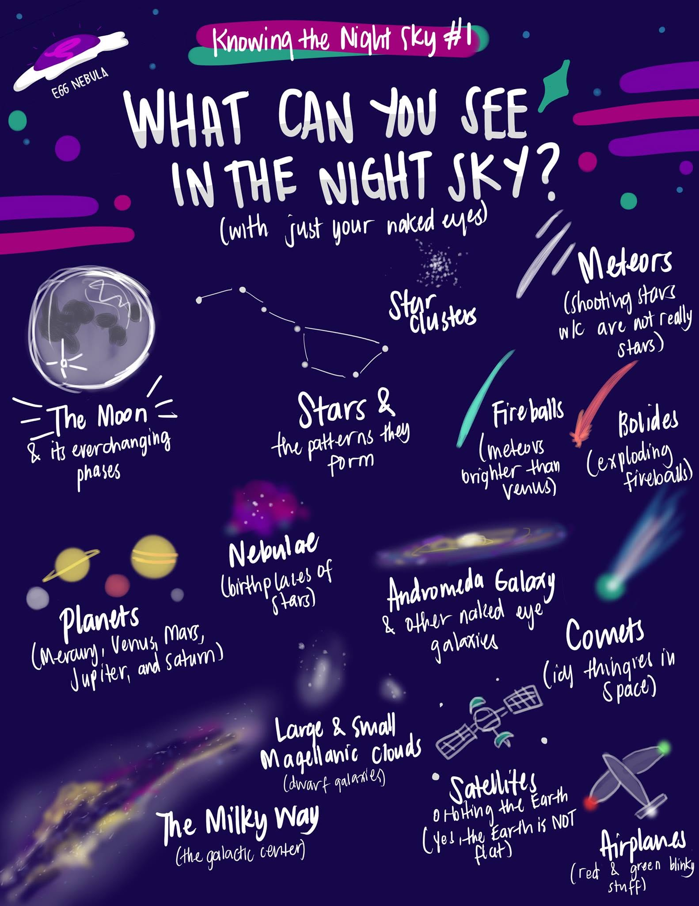
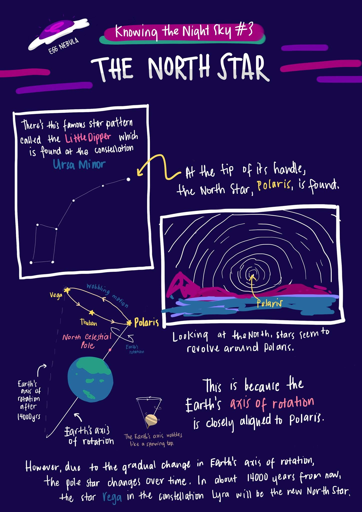
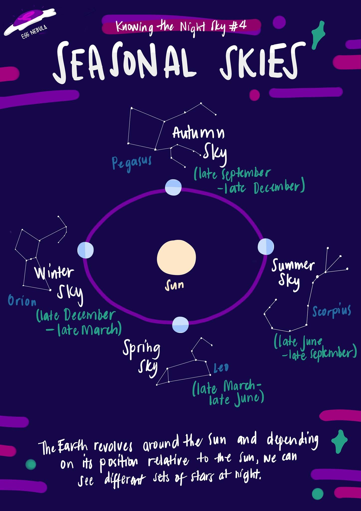
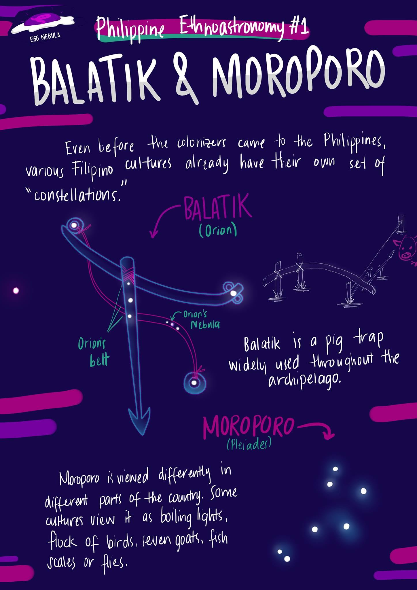
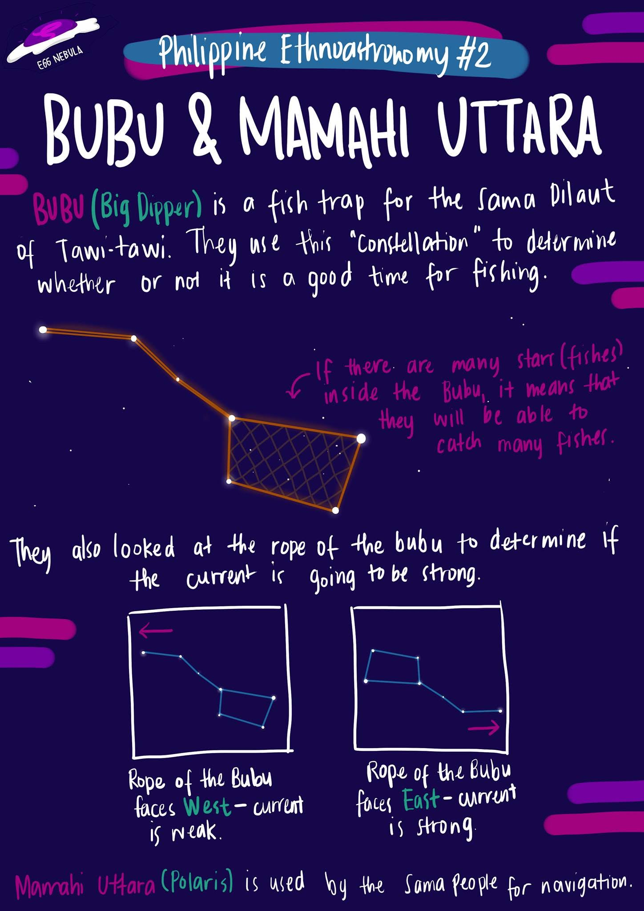
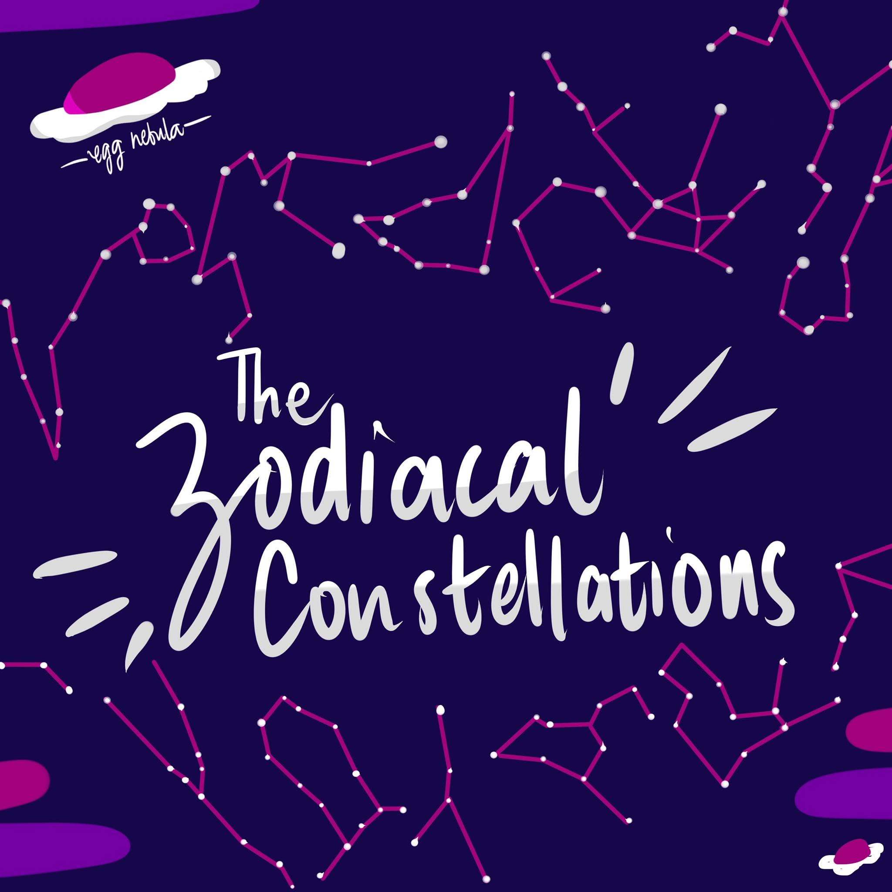
Showcase: Play
The Egg Nebula Lab: small interactive experiments for getting a feel for space, built on NASA open data.
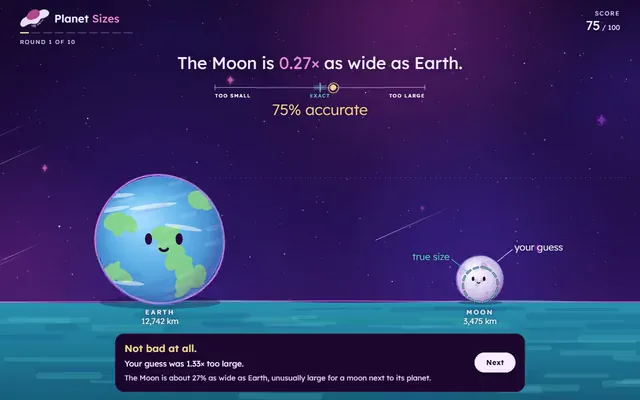
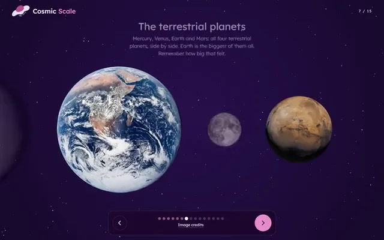
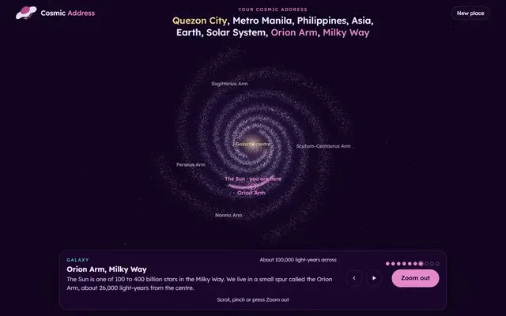
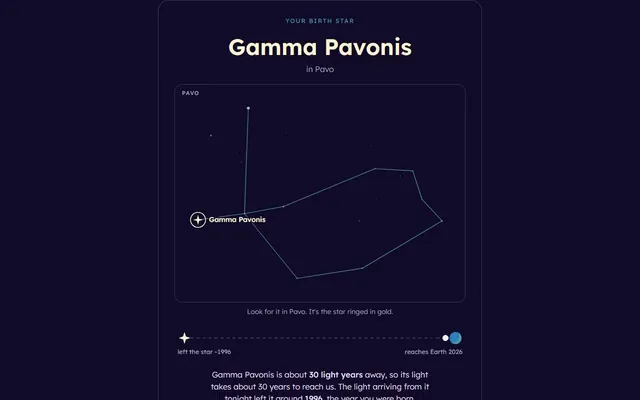
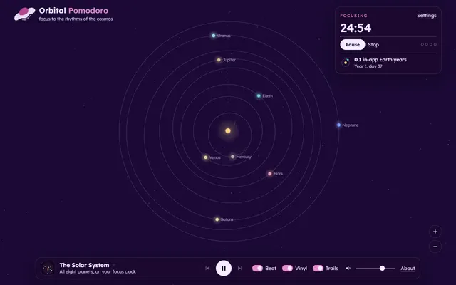
Results / Findings
[Add a quote or feedback from a reader or player, optional]
Discussion
- Mascots, hand-drawn style and humor make astronomy feel like it comes from a friend, not an institution.
- Personal hooks and play, such as your city or your birth year, make large numbers easy to grasp.
- Local knowledge like Philippine ethnoastronomy shows astronomy is a shared human story, not only a Western one.
- Open data lets one creator build a whole platform.
Limitations
Audience measurement is still informal, and most content is in English.
Conclusion
- Creative science communication complements academic outreach.
- Art, technology and open data let a single creator build an engaging platform.
- Working across fields reaches new audiences.
Next steps
More sonification, Filipino-language versions, resources for educators and collaborations.